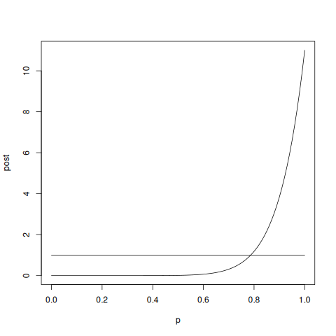
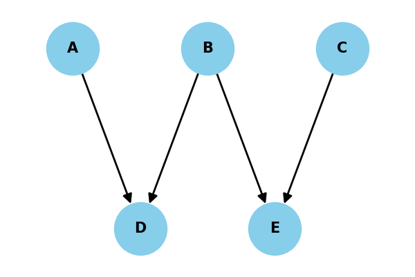
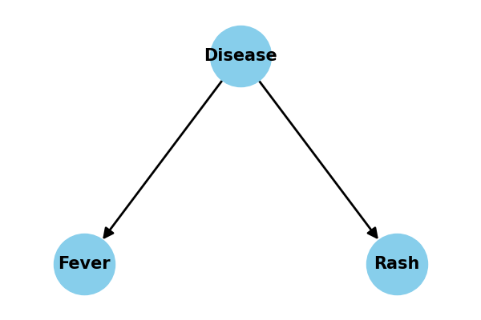

CMPS 06
1. Probability and Boolean Logic
1.1. Are we optimal?
1.1.1. Ellsberg Paradox1
Imagine that you are faced with an urn. You know that it contains 30 red marbles and 60 marbles that are either yellow or black in some combination.
If I offered you the following bet which would you chose?
- I will pay you $100 if you draw a red marble
- Or I will pay you $100 if you draw a black marble.
Consider a different bet.
- I will pay $100 for if you draw either a red or yellow marble,
- Or I will pay $100 for either a black or yellow marble.
Which of these two bets would you prefer to take?
Most people in the first scenario prefer to bet on red. This implies that the value of red choice is in some sense worth more to them, i.e.
p(Red) \(>\) p(Black).
In the second scenario, most prefer the black and yellow combination, i.e.
p(Black) +p(Yellow) \(>\) p(Red) + p(Yellow),
but since the number of yellow balls, whatever it may be, is the same, we can remove these (we may subtract whatever we want from one side of an equation as long as we subtract it from the other side as well). This leaves us with the conclusion that
p(Black) \(>\) p(Red),
contradicting what we apparently believed from our choice of bets in the first scenario.
The usual explanation for this paradox is ambiguity aversion.2
1.1.2. St. Petersburg Paradox
Let's try another example: A casino offers a game of chance for a single player in which a fair coin is tossed at each stage. The pot starts at 1 dollar and is doubled every time a head appears. The first time a tail appears, the game ends and the player wins whatever is in the pot. Thus the player wins 1 dollar if a tail appears on the first toss, 2 dollars if a head appears on the first toss and a tail on the second, 4 dollars if a head appears on the first two tosses and a tail on the third, 8 dollars if a head appears on the first three tosses and a tail on the fourth, and so on. How much would YOU pay to play this game?
What is the expected value of playing the game? Expected value is closely related to the idea of an average or the mean. You weight each outcome by its probability. What is the outcome here?
Your winning is \(2 \times \; \mbox{number of coin tosses} \; - 1\) and you have to multiply this by the probablity of each: \(1/2 \times \; \mbox{number of coin tosses}\).
Put it altogether and you get:
Expected Value of the Game \(= 1/2 \times 1 + 1/4 \times \; 2 + 1/8 \times \; 4 ...\) which is equal to infinity. Why don't we choose play this game at any cost?
1.2. Some of the Mathematical Jargon of Probability
1.2.1. Probability as Counting
Probability theory can be thought of as measuring the size of a set. What is the probability that a coin in my pocket is a nickle? That depends on the size of the set that is the set of all coins that are in my pocket and how many coins are in the subset of coins that are nickles and that are in my pocket. Those two numbers are counting measures. Their ratio is a probability. Below, I briefly consider these ideas, sets and measures, more generally.
- Set Terminology
Set theory is a subdivision of mathematics, and sets have allowed mathematicians to formalize their knowledge of many common mathematical concepts including probability, logic, computability, and even the concept of infinity (e.g. it allows us to prove that some infinities are bigger than others). Even though mathematical sets can be used for very complex exercises, they are basically an extension of our intuitive idea of a set gathered from real world collections (like a dining room set).
The basic terms important for understanding sets are,
- Set:
- An unordered collection of elements
- Element:
- An indivisible thing.
- Membership:
- Denoted by \(\in\), it means is a member of or belongs to. For example, orange \(\in\) Fruit.
- Union:
- Denoted by \(\cup\). Everything thrown together. For example \(\left\{1,2,3\right\} \cup \left\{3,4,5\right\} = \left\{1,2,3,4,5\right\}\).
- Intersection:
- Denoted by \(\cap\). Only those elements that are in both sets. For example \(\left\{1,2,3\right\} \cap \left\{3,4,5\right\} = \left\{3\right\}\).
- Cardinality:
- This is the size of a set, and it is what we use as our counting measure. It is usually represented using the same symbol used to show absolute value (\(\left |{S}\right |\)). This makes sense when you think of absolute value as the "size" of a number; -3 is still three units big, the negative sign just says which way to go on the number line when we lay out the units.
Other concepts can be defined from combinations of these basic ideas.
1.3. Probability as a Measure of Set Size
Previously I mentioned the idea of a metric. A related concept is that of measure. I have used this word a number of times, and you probably inferred its meaning from conventional uses. A measure tells you how big something is. A teaspoon is a measure and there are three teaspoons in a tablespoon. A mathematical measure is essentially the same idea. Where metrics quantify distances, measures quantify size.
Individual outcomes, the elements of our set of interest, are often symbolized by a lower case omega \(\omega\) while the entire set of all possible outcomes is symbolized by a capital omega \(\Omega\).
Just as there is more than one kind of metric, there is more than one variety of measure (e.g. volume, area, Lebesgue). With sets we can often use the counting measure to quantify a set's size. The size of a set is the number of things it contains. To see how we can use this to derive a probability consider the trivial question: what is the probability of flipping a fair coin and having it land "heads."
To answer this question we need to define a probability space. A probability space is a mathematical object that has three different parts. One part is the set of all possible outcomes. Another part is the measure that we use for quantifying the size of sets. And last we have a collection of all the subsets (we will call each of these subsets an event) that together comprise all the possible subsets of our set of all possible outcomes.
I have simplified things somewhat. It could be worse.
To figure out a probability, we compute the measure of our event of interest (the size of the subset of possible qualifying outcomes) and compare it to the size of the set of all possible outcomes. For the simple situation currently under consideration there are only two possible outcomes: head = H, or tail = T. The subset containing our event is \(\left \{ H\right\}\). It has measure 1. The measure of the set of all possible outcomes \(\left \{ H, T\right\}\) is two, and the ratio is \(1/2\), thus our probability is 0.5.
To repeat, for the mathematician, probability is a measure on the sizes of sets. If that is too abstract for you then buckle up. For the mathematician a random variable is a function. Remember functions are machines for turning inputs into outputs. The functions that are random variables take the abstract little entities that are our outcomes and turn them into real numbers on the number line. We can then define events by reference to these numbers. For example, an event could be the subset of all outcomes whose value after being crunched by a random variable function was between two values. Things like this are represented by notations that look like: \[Prob(1 \le X < 2) = | \{ \omega \in \Omega \mbox{ s.t. } X ( \omega ) \le 1 \; \& \; X ( \omega ) < 2 \} |.\] All this says is that our probability of observing some random variable have a value between one and two is equal to the measure of the subset of all possible outcomes that when run through the random variable machine \(X\) have a value between one and two. Usually this complicated way of stating the obvious is not necessary, but it can be very helpful to return to this definition when considering complex cases just as it was useful to return to the definition of the derivative when trying to understand how we could numerically simulate simple differential equations.
1.3.1. Exercise Class
By writing out all possible \(\omega\)'s, determine the probability of getting 2 or more heads from four flips of a fair coin.
1.4. Conditional Probability
Tell them a little bit about the notation and what it means.
When we say that something is conditional, we mean that it depends on something else. A child gets their allowance if they clean their room. The allowance is conditional on the clean room variable being TRUE. The notation for conditional probability typically uses a "pipe": "|". It is defined as, \[P(B|A) = \frac{P(B\cap A)}{P(A)}.\]
Give them the visual.
To continue with our set based view of probability, the equation of conditional probability means that we compare the measure of the subset of outcomes that are in both subsets \(B\) and \(A\) divided by the measure of the subset of outcomes that belong to the subset after the pipe, in this case \(A\). You can also think of this visually.
rectangle represents all possible outcomes. The event defined by \(A\) is the subset of outcomes for which \(A\) is true. Similarly for \(B\). The overlap defines their joint probability and the ratio of the measure of their intersection to the measure of \(A\) defines the conditional probability of \(B\) given \(A\).
Exercise: Compute a Conditional Probability
Demonstrate your understanding of the formula for conditional probability, by computing the probability of getting two or more heads in four flips given that there cannot be two heads in a row. The use of the word "given" is a common equivalent to the the phrase "conditional on". It may be helpful to actually write out all the possible \(\omega\)s and circle the subsets defined by the events.
1.5. Bayes' Rule
A little bit about the history? Reverend Bayes? Posthumous publication.
Bayesian probability is commonly used in psychology and neuroscience, but it is used in two largely different ways. One way that Bayesian probability is used is to expand the types of statistical tests that are employed when performing data analysis. This is often referred to as Bayesian inference. The other way that Bayesian probability is used is as a model for how rational actors use information.
In the method of maximum likelihood we try to figure out what is the most likely underlying hypothesis that would explain the data we observe. What we do with Bayesian probability is to expand this calculation to weight the possible hypotheses by how likely we thought they were before we observed any data.
Imagine that you see a cloud on the horizon. It is a dark cloud, the kind you would normally associate with rain. How likely is it that it will rain? What if you are in Saudi Arabia? What if you are in Britain? Your answers should be very different in the two locations. Rain is much more likely in Britain, and therefore your posterior estimate of rain should be greater when you are in Britain, even when observing the same cloud. This is the intuition behind Bayesian probability. Observations and their implications are combined with prior estimates.
As a formula Bayes Rule is, \[P(H|O) = P(O|H)P(H)/P(O) \label{eqn:baye}\]
where the \(O\) represents our observations and the \(H\) represents our hypotheses. Note that which one is on top, the \(O\) or \(H\), flips between the right and left hand side of the equation. We are interested in how our belief in the various hypotheses changes given our observations. To determine this we can multiply how likely the observations would have been assuming particular hypotheses (this term is sometimes called the likelihood and may be written \(\mathcal{L}(O,H)\)) by how likely they were to start with (this is called the prior). What we get out of this calculation, since it comes after we modify the prior, is the posterior.
Frequently, one may see statements of Bayes Rule that look like \[P(H|O) \propto P(O|H)P(H).\label{eqn:bayeApprx}\] Note that we do not have an equal sign, but a sign for "proportional to." When using Bayes rule in practice we are usually trying to estimate the probability of our hypothesis given some data. The data does not change, so the \(P(O)\) is the same for all estimates of the parameters of \(H\). Therefore, the ordering of all the posteriors does not change simply because we divide them all by the same constant number. Our most probable values for \(H\) will still be the most probable, and so we can often ignore the term \(P(O)\).
Bayes' rule is basically an instruction on how to combine evidence. We should weight our prior beliefs by our observations. It is important to remember what the \(P\)'s mean in the equation. These are distributions, not simple numbers but functions. This means that if our prior belief is very concentrated, and our likelihood very broad, we should (and the equation determines that we will) give more weight to the prior (or vice verse). We wait the evidence based on its quality. Much work in psychology is devoted to determining if this optimal method of evidence combination is actually the way humans think.
Efforts to incorporate this idea into psychology: Perception as Bayesian Inference
Example of using Bayesian Inference. A classical problem associated with LaPlace (alot of the example here comes from the site: The sunrise problem in code and a folksy version).
Here is some R code for demonstrating this. I can type these live.
prior.successes <- 0 prior.failures <- 0 alpha <- prior.successes+1 beta <- prior.failures+1 prior.mu <- alpha/(alpha+beta) prior.mu successes <- 1 failures <- 0 p <- seq(from = 0, to = 1, by = 0.01) p prior <- dbeta(p,alpha,beta) plot(prior,type = "l") post <- dbeta(p,alpha + successes,beta+failures) plot(post, type = "l") post.mu <- (alpha + successes )/ (alpha + successes + beta + failures) post.mu successes = 10 post <- dbeta(p, alpha + successes, beta+failures) plot(x = p,post, type = "l") lines(x=p,y=prior)

Figure 1: Simple coded example of how an event's calculated probability rises with the number of repeated observations.
1.6. Humans Are Not Rational
A lot of recent psychological work evaluates the idea of us as ideal or optimal learners; that we use probability in a perfect way. But are we really?
While Bayesian models are common, and there are many areas where near optimal behavior is observed, there are a number of observations that challenge the claim that humans are probabilistically sophisticated. In fact, we can easily be shown to be inconsistent. The Ellsberg paradox above is one example of this, but there are many others. One of the benefits of having some familiarity with the language of probability is that it allows one to construct probabilistic models, but another advantage is that it gives one the basis for constructing and evaluating experiments designed to test the ability of humans to reason under uncertainty. A famous example of this comes from the conjunction fallacy.
Exercise: Conjunction Fallacy
Poll a group of your friends on the following question:
"Linda is 31 years old, single, outspoken, and very bright. She majored in philosophy. As a student, she was deeply concerned with issues of discrimination and social justice, and also participated in anti-nuclear demonstrations."
Which is more probable?
- Linda is a bank teller.
- Linda is a bank teller and is active in the feminist movement.
Many people choose bank teller and feminist. Consider this response from the point of view of probability, sets, and counting. For the sets of all people and all occupations there is a set of events that correspond to bank teller and to feminist. Since not all bank tellers are feminists the intersection of the subsets feminist and bank teller must be no larger than the subset of bank teller alone. Thus, the size (measure) of the conjunction bank teller and feminist is less than bank teller by itself. Thus, the probability of the first statement is larger than the second. So why do people routinely pick the second?
There is a large body of research following up on the observation of the conjunction fallacy. One popular account holds that the conjunction fallacy arises from humans equating the probability of an outcome with its typicality; the more typical something is, the more probable we estimate it to be. We feel that for someone with Linda's earlier social preferences, the characteristic of being a feminist is more typical, and so we rate it as more probable. For developing computational modeling skills it is not critical what the answer is to the conjunction fallacy. What is critical, is that it is only from our familiarity with the axioms of probability and what it actually means mathematically that we can perceive human responses as a possible fallacy. Without this computational vocabulary we cannot detect the paradox nor design experiments or models to explain it.
At this point, I could go on to the Boolean section if time permits, but I am not writing that up now. Our goal for next week will be to get everyone working with the psychopy to make a simple Posner task, the then we can think about doing some random walk analysis and ez diffusion the week after, and I can try to fit the Boolean material in there somewhere.
1.7. Bayes Networks3
Bayes nets are a way to graphically represent what we take to be the relational, usually causal, structure between pieces of an overall probabilistic puzzle. They are customarily represented like a graph and the edges have directions. Hence you will frequently see them referred to as DAGs (Directed Acyclic Graphs).
Often they appear like this:

Figure 2: A simple Bayes Net. In this example there is an influence of nodes A and B on D and of B and C on E. Associated to each edge, but not shown, is a probability distribution.
It is common to conflate Bayesian Statistics with Bayes Nets since they are named similarly, but in fact they are quite different. We use Bayesian statistics to infer certain things about our data, but we use Bayes Nets to represent. We may be representing our beliefs about the interrelationship about the nodes, and that the accuracy of that structure may be something we can test via interventions. Or we may simply be using it as a way to understand certain phenomena, such as explaining away.
Another notion common to a Bayes Net is that of efficiency. When you have a large number of variables the joint probabilty distribution can grow to be quite large. For example in Figure 2 we would have to represent the complete joint probability of factors A, B, C, D, \& E as \( P(A)~P(B|A)~P(C|B,A)~P(D | C,B,A)~P(E|D,C,B,A) \), but since we know the structure is simpler we can actually represent the joint probability as \( P(D|A,B)~P(E|B,C)~P(A)~P(B)~P(C) \). We have many fewer terms to estimate. The advantage of this representation increases with the number of nodes and the sparsity of dependencies.
A strong assumption of these models is the Markov Assumption. It says that we only ever need to go one node back. For example, it says that if you know the relation between a parent and child, then you never need worry about the grandparents since their only contribution (under this assumption) is via the parent. In practice this works out well, usually, but it is not necessarily always the case.
Graphs like these allow you to read off when two variables will be independent given your knowledge of other variables. For example consider the case where you have a disease that causes two symptoms: fever and rash. We imagine a structure like Figure 3.

Figure 3: A Bayes Net representation of how a disease leads to two symptoms.
If we know the disease status then the presence of fever and rash independent. The only way they influence each other is indirectly by both being caused by the disease. However, if we do not know the disease status then knowing that a person has rash increases the probability they also have fever, because our imputed probability of disease is affected by knowing the status of the rash even though the causal influence goes in the opposite direction.
This is an example of d-separation. There are three basic cases to worry about. When two nodes are connected by a direct series of links then knowing any of the links in between them separates them and makes them independent. This is also the case when there is a common ancestor, as in the disease example. The tricky case that takes some time to think through is when the two nodes have a common descendant. It that case it is knowing the descendant that renders the ancestors independent.
ToDo: add a numerical explaining away example. For now can use the one from Prof. Goldwater's slides.
1.8. Tutorial Experiments with Bayes Nets and Python
1.8.1. PGMPY
PGMPY is a python library that does quite a bit more than just Bayes Nets.4 In fact, you can use it for structural equation modeling if that is your interest. We will barely scratch the surface, but you will end up knowing that it exists, and some of the elemental aspects of how to install it and use it in a minimal instance.
1.8.2. Installation
Many python libraries have been written with particular versions of python in mind. You have to make sure that you have a python version installed that is compatible with the libraries you plan to use. PGMPY's compatabilty can be found on the installation page. One of the strength's of virutal environments is that they enable you to have multiple installed versions of python on your computer at any one time. When creating a virtual environment with uv you can specify which version of python you want used for that environment, e.g. uv venv --python=3.10. If after activation you then uv pip install pgmpy you will pull in a lot of rather large python dependencies. Be patient.
1.8.3. Bayesian Networks
Bayesian Networks (the library uses the full spelling) are a class in the pgmpy library. And an empty network can be initiated by,
from pgmpy.models import BayesianNetwork as bn G = bn()
Such a network can be grown by adding nodes or edges. In keeping with its identity as a Bayes Net the edges also carry conditional probability information.
Classroom Activity
The classroom activity will be to explore a simple Bayesian Network Model from the tutorial examples in the pgmpy library. As a first step explore the same networks available at https://www.bnlearn.com/bnrepository/. The library has a function to allow you rapidly import those examples. Try it. Below I show how.
from pgmpy.utils import get_example_model cancer_model = get_example_model('cancer') cmd = cancer_model.to_daft() cmd.render() cmd.savefig("cancer.png")

Figure 4: This is a graphical plot of the example cancer model. Note that getting the pictures to show up can be problematic depending on which environment you choose to work in. For this example I used daft. More options can be found on the Plotting Models page at the pgmpy library home page. If you use the nx.draw function you can also use matplotlib directly.
from pgmpy.models import BayesianNetwork from pgmpy.factors.discrete import TabularCPD # Defining the model structure. We can define the network by just passing a list of edges. model = BayesianNetwork([('D', 'G'), ('I', 'G'), ('G', 'L'), ('I', 'S')]) # Defining individual CPDs. cpd_d = TabularCPD(variable='D', variable_card=2, values=[[0.6], [0.4]]) cpd_i = TabularCPD(variable='I', variable_card=2, values=[[0.7], [0.3]]) # The representation of CPD in pgmpy is a bit different than the CPD shown in the above picture. In pgmpy the colums # are the evidences and rows are the states of the variable. So the grade CPD is represented like this: # # +---------+---------+---------+---------+---------+ # | diff | intel_0 | intel_0 | intel_1 | intel_1 | # +---------+---------+---------+---------+---------+ # | intel | diff_0 | diff_1 | diff_0 | diff_1 | # +---------+---------+---------+---------+---------+ # | grade_0 | 0.3 | 0.05 | 0.9 | 0.5 | # +---------+---------+---------+---------+---------+ # | grade_1 | 0.4 | 0.25 | 0.08 | 0.3 | # +---------+---------+---------+---------+---------+ # | grade_2 | 0.3 | 0.7 | 0.02 | 0.2 | # +---------+---------+---------+---------+---------+ cpd_g = TabularCPD(variable='G', variable_card=3, values=[[0.3, 0.05, 0.9, 0.5], [0.4, 0.25, 0.08, 0.3], [0.3, 0.7, 0.02, 0.2]], evidence=['I', 'D'], evidence_card=[2, 2]) cpd_l = TabularCPD(variable='L', variable_card=2, values=[[0.1, 0.4, 0.99], [0.9, 0.6, 0.01]], evidence=['G'], evidence_card=[3]) cpd_s = TabularCPD(variable='S', variable_card=2, values=[[0.95, 0.2], [0.05, 0.8]], evidence=['I'], evidence_card=[2]) # Associating the CPDs with the network model.add_cpds(cpd_d, cpd_i, cpd_g, cpd_l, cpd_s) # check_model checks for the network structure and CPDs and verifies that the CPDs are correctly # defined and sum to 1. model.check_model() sd = model.to_daft() sd.render() sd.savefig("students.png")

# CPDs can also be defined using the state names of the variables. If the state names are not provided # like in the previous example, pgmpy will automatically assign names as: 0, 1, 2, .... cpd_d_sn = TabularCPD(variable='D', variable_card=2, values=[[0.6], [0.4]], state_names={'D': ['Easy', 'Hard']}) cpd_i_sn = TabularCPD(variable='I', variable_card=2, values=[[0.7], [0.3]], state_names={'I': ['Dumb', 'Intelligent']}) cpd_g_sn = TabularCPD(variable='G', variable_card=3, values=[[0.3, 0.05, 0.9, 0.5], [0.4, 0.25, 0.08, 0.3], [0.3, 0.7, 0.02, 0.2]], evidence=['I', 'D'], evidence_card=[2, 2], state_names={'G': ['A', 'B', 'C'], 'I': ['Dumb', 'Intelligent'], 'D': ['Easy', 'Hard']}) cpd_l_sn = TabularCPD(variable='L', variable_card=2, values=[[0.1, 0.4, 0.99], [0.9, 0.6, 0.01]], evidence=['G'], evidence_card=[3], state_names={'L': ['Bad', 'Good'], 'G': ['A', 'B', 'C']}) cpd_s_sn = TabularCPD(variable='S', variable_card=2, values=[[0.95, 0.2], [0.05, 0.8]], evidence=['I'], evidence_card=[2], state_names={'S': ['Bad', 'Good'], 'I': ['Dumb', 'Intelligent']}) # These defined CPDs can be added to the model. Since, the model already has CPDs associated to variables, it will # show warning that pmgpy is now replacing those CPDs with the new ones. model.add_cpds(cpd_d_sn, cpd_i_sn, cpd_g_sn, cpd_l_sn, cpd_s_sn) model.check_model() model.get_cpds() print(model.get_cpds('G'))
WARNING:pgmpy:Replacing existing CPD for D WARNING:pgmpy:Replacing existing CPD for I WARNING:pgmpy:Replacing existing CPD for G WARNING:pgmpy:Replacing existing CPD for L WARNING:pgmpy:Replacing existing CPD for S +------+---------+---------+----------------+----------------+ | I | I(Dumb) | I(Dumb) | I(Intelligent) | I(Intelligent) | +------+---------+---------+----------------+----------------+ | D | D(Easy) | D(Hard) | D(Easy) | D(Hard) | +------+---------+---------+----------------+----------------+ | G(A) | 0.3 | 0.05 | 0.9 | 0.5 | +------+---------+---------+----------------+----------------+ | G(B) | 0.4 | 0.25 | 0.08 | 0.3 | +------+---------+---------+----------------+----------------+ | G(C) | 0.3 | 0.7 | 0.02 | 0.2 | +------+---------+---------+----------------+----------------+
Footnotes:
Ivan Moscati, “Ellsberg 1961: Text, Context, Influence,” Decisions in Economics and Finance 47, no. 2 (May 2024): 627–53, https://doi.org/10.1007/s10203-024-00437-1.
Yoram Halevy, “Ellsberg Revisited: An Experimental Study,” Econometrica 75, no. 2 (March 2007): 503–36, https://doi.org/10.1111/j.1468-0262.2006.00755.x.
Much of the tutorial material about Bayes Nets was taken from the nice lecture slides (pdf) of Prof. Sharon Goldwater of the University of Edinburgh.
Ankur Ankan and Johannes Textor, “Pgmpy: A Python Toolkit for Bayesian Networks,” Journal of Machine Learning Research 25, no. 265 (2024): 1–8, http://jmlr.org/papers/v25/23-0487.html.